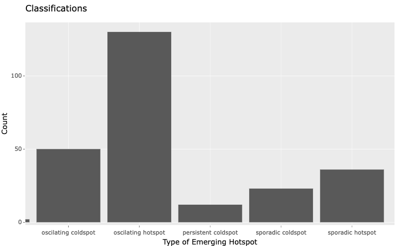

pacman::p_load(sf, spNetwork, tmap, classInt, viridis, tidyverse, list, arrow, lubridate, tidyverse, readr, sp, maptools, raster, spatstat, spdep, readr, ggplot2, plotly, hexbin, gganimate, gifski, png, transformr, dplyr, spacetime)Take Home Exercise 2
Overview
Setting the Scene
Dengue Hemorrhagic Fever (in short dengue fever) is one of the most widespread mosquito-borne diseases in the most tropical and subtropical regions. It is an acute disease caused by dengue virus infection which is transmitted by female Aedes aegypti and Aedes albopictus mosquitoes. In 2015, Taiwan had recorded the most severe dengue fever outbreak with more than 43,000 dengue cases and 228 deaths. Since then, the annual reported dengue fever cases were maintained at the level of not more than 200 cases. However, in 2023, Taiwan recorded 26703 dengue fever cases. Figure below reveals that more than 25,000 cases were reported at Tainan City.
Figure 2 and 3 below reveal that more than 80% of the reported dengue fever cases occurred in the month August-November 2023 and epidemiology week 31-50.
Objectives
As a curious geospatial analytics green horn, you are interested to discover:
if the distribution of dengue fever outbreak at Tainan City, Taiwan are independent from space and space and time. If the outbreak is indeed spatial and spatio-temporal dependent, then, you would like to detect where are the clusters and outliers, and the emerging hot spot/cold spot areas.
The Task
The specific tasks of this take-home exercise are as follows:
Using appropriate function of sf and tidyverse, preparing the following geospatial data layer: a study area layer in sf polygon features. It must be at village level and confined to the D01, D02, D04, D06, D07, D08, D32 and D39 counties of Tainan City, Taiwan. a dengue fever layer within the study area in sf point features. The dengue fever cases should be confined to epidemiology week 31-50, 2023. a derived dengue fever layer in spacetime s3 class of sfdep. It should contain, among many other useful information, a data field showing number of dengue fever cases by village and by epidemiology week. Using the extracted data, perform global spatial autocorrelation analysis. Using the extracted data, perform local spatial autocorrelation analysis. Using the extracted data, perform emerging hotspot analysis. Describe the spatial patterns revealed by the analysis above.
The Data
For the purpose of this take-home exercise, two data sets are provided, they are:
TAIWAN_VILLAGE_2020, a geospatial data of village boundary of Taiwan. It is in ESRI shapefile format. The data is in Taiwan Geographic Coordinate System. (Source: Historical map data of the village boundary: TWD97 longitude and latitude)
Dengue_Daily.csv, an aspatial data of reported dengue cases in Taiwan since 1998. (Source: Dengue Daily Confirmed Cases Since 1998. Below are selected fields that are useful for this study:
發病日: Onset date 最小統計區中心點X: x-coordinate 最小統計區中心點Y: y-coordinate Both data sets have been uploaded on eLearn.
Getting Started
Data Acquisition
| Dataset Name | Source |
| TAIWAN_VILLAGE_2020 | Historical map data of the village boundary: TWD97 longitude and latitude |
| Dengue_Daily.csv | Dengue Daily Confirmed Cases Since 1998 |
Installing and Loading Packages
Lets install the relevant R libraries needed using pacman.
Setting Important Configurations
folderToSave <- "/Users/maarunipandithurai/Documents/maars202/geospatial/IS415-GAA/data/rds"currentdirec = list.files(path="../../data/takehomeassigment2/geospatial", pattern=NULL, all.files=FALSE,
full.names=FALSE)
currentdirecReading the grab aspatial data:
dengue_df <- read_csv("../../data/takehomeassigment2/aspatial/Dengue_Daily.csv")
dengue_dfGetting Columns of dengue_df:
names(dengue_df)Lets print a summary of dengue_df to find the data distribution and other information:
summary(dengue_df[])We need to retrieve the coastal outline of Taiwan village so that we are able to fetch the dengue infections specifically within these boundaries. According to https://epsg.io/3826, the EPSG code for taiwan to be used as the coordinate system is 3826. Thus, the data has been projected to Taiwan’s coordinate system using 3826. However since the data is already projected to Taiwan’s coordinate system we do not need to do this
taiwan_sf <- st_read(dsn = "../../data/takehomeassigment2/geospatial", layer="TAINAN_VILLAGE")
taiwan_sfplot(taiwan_sf)# find location of missing values
print("Position of missing values ")
which(is.na(dengue_df))
# count total missing values
print("Count of total missing values ")
sum(is.na(dengue_df))
colSums(is.na(dengue_df))
Tip
Interesting observation I had here was how all the columns had no missing values and yet the map was not being plotted. Then, I realised it was due to the null values being presented as “None” string instead of the numerical value such as the example below.
dengue_df[6,]$最小統計區中心點XLets filter out all the None values to get valid x and y coordinates. 最小統計區中心點X, 最小統計區中心點Y
dengue_df_filtered <- filter(dengue_df, 最小統計區中心點X != "None" & 最小統計區中心點Y != "None")
head(dengue_df_filtered)We need to filter the onset date column by epiweek to get epiweeks 31 to 50 of 2023. According to https://www.cmmcp.org/sites/g/files/vyhlif2966/f/uploads/epiweekcalendar2023.pdf, the start date of epiweek 31 in 2023 is 30-07-2023 and end date of epiweek 50 in 2023 is 16-12-2023.
dengue_df_filtered$epiweek = epiweek(dengue_df_filtered$發病日)
names(dengue_df_filtered)start_date = "2023-07-30"
end_date = "2023-12-16"
dengue_df_filtered = filter(dengue_df_filtered, 發病日 >= start_date & 發病日 <= end_date)
dengue_df_filteredAfter filtering valid points, lets convert the latitude and longitude from wsg84 to TWD97 as it conforms Taiwan’s coordinate system for easier analysis and for us to join it with the taiwan_sf later.
dengue_df_filtered <- st_as_sf(dengue_df_filtered,
coords = c("最小統計區中心點X","最小統計區中心點Y"),
crs=3826) %>%
st_transform(crs = 3826)
glimpse(dengue_df_filtered)Let us save this combined dataframe to RDS so that we will not need to repeat the above steps. Replace filepath with the directory you would like to save the rds at.
filepath <- str_interp("${folderToSave}/dengue_df")
write_rds(dengue_df_filtered, filepath) Reload the data from the file path from here for subsequent steps:
filepath <- str_interp("${folderToSave}/dengue_df")
dengue_df <- read_rds(filepath, refhook = NULL)
head(dengue_df) Analysis
pacman::p_load(sf, sfdep, spNetwork, tmap, classInt, viridis, tidyverse, list, arrow, lubridate, tidyverse, readr, sp, maptools, raster, spatstat, spdep, readr, ggplot2, plotly, hexbin, gganimate, gifski, png, transformr, dplyr)
folderToSave <- "/Users/maarunipandithurai/Documents/maars202/geospatial/IS415-GAA/data/rds"Let’s read the taiwan polygon data.
taiwan_sf <- st_read(dsn = "../../data/takehomeassigment2/geospatial", layer="TAINAN_VILLAGE")Reading layer `TAINAN_VILLAGE' from data source
`/Users/maarunipandithurai/Documents/maars202/geospatial/IS415-GAA/data/takehomeassigment2/geospatial'
using driver `ESRI Shapefile'
Simple feature collection with 649 features and 10 fields
Geometry type: POLYGON
Dimension: XY
Bounding box: xmin: 120.0269 ymin: 22.88751 xmax: 120.6563 ymax: 23.41374
Geodetic CRS: TWD97head(taiwan_sf)Simple feature collection with 6 features and 10 fields
Geometry type: POLYGON
Dimension: XY
Bounding box: xmin: 120.053 ymin: 22.93251 xmax: 120.2905 ymax: 23.16919
Geodetic CRS: TWD97
VILLCODE COUNTYNAME TOWNNAME VILLNAME VILLENG COUNTYID COUNTYCODE
1 67000280002 臺南市 歸仁區 六甲里 Liujia Vil. D 67000
2 67000350032 臺南市 安南區 青草里 Qingcao Vil. D 67000
3 67000150009 臺南市 七股區 溪南里 Xinan Vil. D 67000
4 67000150010 臺南市 七股區 七股里 Qigu Vil. D 67000
5 67000150008 臺南市 七股區 龍山里 Longshan Vil. D 67000
6 67000150017 臺南市 七股區 中寮里 Zhongliao Vil. D 67000
TOWNID TOWNCODE NOTE geometry
1 D33 67000280 <NA> POLYGON ((120.2725 22.95868...
2 D06 67000350 <NA> POLYGON ((120.1176 23.08387...
3 D22 67000150 <NA> POLYGON ((120.121 23.1355, ...
4 D22 67000150 <NA> POLYGON ((120.1312 23.1371,...
5 D22 67000150 <NA> POLYGON ((120.0845 23.13503...
6 D22 67000150 <NA> POLYGON ((120.126 23.16917,...Lets read the previously saved filtered and saved data:
filepath <- str_interp("${folderToSave}/dengue_df")
dengue_df <- read_rds(filepath, refhook = NULL)
head(dengue_df) Simple feature collection with 6 features and 25 fields
Geometry type: POINT
Dimension: XY
Bounding box: xmin: 120.218 ymin: 22.97608 xmax: 120.2465 ymax: 23.01932
Projected CRS: TWD97 / TM2 zone 121
# A tibble: 6 × 26
發病日 個案研判日 通報日 性別 年齡層 居住縣市 居住鄉鎮 居住村里
<date> <chr> <date> <chr> <chr> <chr> <chr> <chr>
1 2023-07-30 2023/07/31 2023-07-31 女 65-69 台南市 東區 忠孝里
2 2023-07-30 2023/07/31 2023-07-31 男 70+ 台南市 東區 德光里
3 2023-07-30 2023/07/31 2023-07-31 女 50-54 台南市 永康區 五王里
4 2023-07-30 2023/07/31 2023-07-31 女 15-19 台南市 永康區 二王里
5 2023-07-30 2023/07/31 2023-07-31 女 15-19 台南市 永康區 二王里
6 2023-07-30 2023/08/02 2023-08-02 男 50-54 台南市 永康區 安康里
# ℹ 18 more variables: 最小統計區 <chr>, 一級統計區 <chr>, 二級統計區 <chr>,
# 感染縣市 <chr>, 感染鄉鎮 <chr>, 感染村里 <chr>, 是否境外移入 <chr>,
# 感染國家 <chr>, 確定病例數 <dbl>, 居住村里代碼 <chr>, 感染村里代碼 <chr>,
# 血清型 <chr>, 內政部居住縣市代碼 <chr>, 內政部居住鄉鎮代碼 <chr>,
# 內政部感染縣市代碼 <chr>, 內政部感染鄉鎮代碼 <chr>, epiweek <dbl>,
# geometry <POINT [m]>These are the columns in chinese for dengue_df. It is inconvenient to use these. Thus, let’s convert them to English.
print(names(dengue_df)) [1] "發病日" "個案研判日" "通報日"
[4] "性別" "年齡層" "居住縣市"
[7] "居住鄉鎮" "居住村里" "最小統計區"
[10] "一級統計區" "二級統計區" "感染縣市"
[13] "感染鄉鎮" "感染村里" "是否境外移入"
[16] "感染國家" "確定病例數" "居住村里代碼"
[19] "感染村里代碼" "血清型" "內政部居住縣市代碼"
[22] "內政部居住鄉鎮代碼" "內政部感染縣市代碼" "內政部感染鄉鎮代碼"
[25] "epiweek" "geometry" names(dengue_df)[1] = "Day_of_onset"
names(dengue_df)[2] = "Day_of_judgement"
names(dengue_df)[3] = "Day_of_report"
names(dengue_df)[4] = "Gender"
names(dengue_df)[5] = "Age_group"
names(dengue_df)[6] = "County_and_city_of_residence"
names(dengue_df)[7] = "TOWNNAME"
names(dengue_df)[8] = "VILLNAME"
names(dengue_df)[9] = "Minimum_statistical_area"
names(dengue_df)[10] = "First_level_statistical_area"
names(dengue_df)[11] = "Secondary_level_statistical_area"
names(dengue_df)[12] = "Infected_counties_and_cities"
names(dengue_df)[13] = "Infected_towns"
names(dengue_df)[14] = "Infect_the_village"
names(dengue_df)[15] = "Whether_to_immigrate_from_abroad"
names(dengue_df)[16] = "Infected_countries"
names(dengue_df)[17] = "Number_of_cases"
names(dengue_df)[18] = "Residential_village_code"
names(dengue_df)[19] = "Infected_Village_Code"
names(dengue_df)[20] = "Serotype"
names(dengue_df)[21] = "Ministry_of_Interior_county"
names(dengue_df)[22] = "Home_Office_Township_Code_of_Residence"
names(dengue_df)[23] = "Ministry_of_Interior"
names(dengue_df)[24] = "Home_Office_Infection_Township_Code"Data distribution for columns
g <- ggplot(dengue_df_2, aes(年齡層))
p <- g + geom_bar() + ggtitle("Count of Entries by Age") + xlab("Age") + ylab("Count")
ggplotly(p) g <- ggplot(dengue_df, aes(Infected_counties_and_cities))
p <- g + geom_bar() + ggtitle("Count of Entries by cities") + xlab("Infected_counties_and_cities") + ylab("Count")
ggplotly(p)
Since we only need the polygons from D01, D02, D04, D06, D07, D08, D32 and D39 counties of Tainan City, Taiwan, we we will filter our polygons from these regions only:
taiwan_sf_filtered <- filter(taiwan_sf, TOWNID %in% c('D01', 'D02', 'D04', 'D06', 'D07', 'D08', 'D32', 'D39'))
head(taiwan_sf_filtered)Simple feature collection with 6 features and 10 fields
Geometry type: POLYGON
Dimension: XY
Bounding box: xmin: 120.0936 ymin: 22.9156 xmax: 120.2585 ymax: 23.08827
Geodetic CRS: TWD97
VILLCODE COUNTYNAME TOWNNAME VILLNAME VILLENG COUNTYID COUNTYCODE
1 67000350032 臺南市 安南區 青草里 Qingcao Vil. D 67000
2 67000270011 臺南市 仁德區 保安里 Bao'an Vil. D 67000
3 67000370005 臺南市 中西區 赤嵌里 Chihkan Vil. D 67000
4 67000330004 臺南市 南區 大成里 Dacheng Vil. D 67000
5 67000350028 臺南市 安南區 城北里 Chengbei Vil. D 67000
6 67000350030 臺南市 安南區 城南里 Chengnan Vil. D 67000
TOWNID TOWNCODE NOTE geometry
1 D06 67000350 <NA> POLYGON ((120.1176 23.08387...
2 D32 67000270 <NA> POLYGON ((120.2304 22.93544...
3 D08 67000370 <NA> POLYGON ((120.2012 22.99966...
4 D02 67000330 <NA> POLYGON ((120.1985 22.98147...
5 D06 67000350 <NA> POLYGON ((120.1292 23.06512...
6 D06 67000350 <NA> POLYGON ((120.1246 23.06904...Lets look at the columns present in Taiwan_sf:
names(taiwan_sf_filtered) [1] "VILLCODE" "COUNTYNAME" "TOWNNAME" "VILLNAME" "VILLENG"
[6] "COUNTYID" "COUNTYCODE" "TOWNID" "TOWNCODE" "NOTE"
[11] "geometry" Since we need to do an analysis of the count of cases at village level and by weeks, let’s group by village town and week to get the count of cases according to village and weeks. Since multiple villages exist in a town and both town and village fields exist in taiwan sf, we can group by with townname as well.
dengue_df_count = dengue_df %>% group_by(VILLNAME, TOWNNAME, epiweek) %>%
summarise(total_count = n())
dengue_df_count = st_drop_geometry(dengue_df_count)
head(dengue_df_count)# A tibble: 6 × 4
# Groups: VILLNAME, TOWNNAME [2]
VILLNAME TOWNNAME epiweek total_count
<chr> <chr> <dbl> <int>
1 None 三峽區 40 1
2 None 下營區 36 1
3 None 下營區 38 1
4 None 下營區 40 2
5 None 下營區 42 1
6 None 下營區 45 1We can combine villname and townname as it is representative of the region and can be used as a single column later.
dengue_df_count$VILLTOWN = paste(dengue_df_count$VILLNAME, dengue_df_count$TOWNNAME)
taiwan_sf_filtered$VILLTOWN = paste(taiwan_sf_filtered$VILLNAME, taiwan_sf_filtered$TOWNNAME)We can now ungroup all the times and keep only VILLNAME, TOWNNAME, epiweek and the derived count column for the dengue cases in each region at that epiweek.
dengue_df_count2 = dengue_df_count %>%
ungroup() %>%
select(3,4, 5)
names(dengue_df_count2)[1] = "epiweek"
head(dengue_df_count2)# A tibble: 6 × 3
epiweek total_count VILLTOWN
<dbl> <int> <chr>
1 40 1 None 三峽區
2 36 1 None 下營區
3 38 1 None 下營區
4 40 2 None 下營區
5 42 1 None 下營區
6 45 1 None 下營區Before adding in entries for missing observations in taiwan sf, lets observe how it initially looks like:
As we can see there are many missing regions with no observations according to dengue_df. We need to creating empty observations with count 0 so that we are able to create the spacetime cube later for spatiotemporal analysis.
#for each town check if the week exists is not then add row for that week for that reach with count 0
total_invalids = 0
for(i in 1:nrow(taiwan_sf_filtered))
{
region = taiwan_sf_filtered$VILLTOWN[i]
#cat("region: ", region)
for(j in 31:50){
if (nrow(dengue_df_count2[dengue_df_count2$epiweek == j & dengue_df_count2$VILLTOWN == region, ]) == 0){
matching_week_region = c(epiweek = j, total_count = 0, VILLTOWN = region)
dengue_df_count2 = rbind(dengue_df_count2,matching_week_region)
total_invalids = total_invalids + 1
}
}
#print(total_invalids)
}
print(total_invalids)[1] 2111Since the epiweek and total_count are in integer format we need to cast them to integer for our analysis.
dengue_df_count2['epiweek'] <- as.integer(unlist(dengue_df_count2['epiweek']))
dengue_df_count2['total_count'] <- as.integer(unlist(dengue_df_count2['total_count']))Lets add the attributes of dengue_df_count2 to the taiwan sf spatial dataset using a left join:
dengue_df_combined = left_join(taiwan_sf_filtered, dengue_df_count2)
dengue_df_combined <- dengue_df_combined %>%
select(11, 12, 13)
names(dengue_df_combined)[2] = "epiweek"
head(dengue_df_combined)Simple feature collection with 6 features and 3 fields
Geometry type: POLYGON
Dimension: XY
Bounding box: xmin: 120.0936 ymin: 23.05871 xmax: 120.1185 ymax: 23.08827
Geodetic CRS: TWD97
VILLTOWN epiweek total_count geometry
1 青草里 安南區 37 1 POLYGON ((120.1176 23.08387...
2 青草里 安南區 41 1 POLYGON ((120.1176 23.08387...
3 青草里 安南區 31 0 POLYGON ((120.1176 23.08387...
4 青草里 安南區 32 0 POLYGON ((120.1176 23.08387...
5 青草里 安南區 33 0 POLYGON ((120.1176 23.08387...
6 青草里 安南區 34 0 POLYGON ((120.1176 23.08387...We can look at the distribution of data for each region and check if each village has 20 weeks worth of observations.
dengue_df_distribution = dengue_df_combined %>% group_by(VILLTOWN) %>%
summarise(total_count_weeks = n())
dengue_df_distributionSimple feature collection with 258 features and 2 fields
Geometry type: POLYGON
Dimension: XY
Bounding box: xmin: 120.0627 ymin: 22.89401 xmax: 120.2925 ymax: 23.09144
Geodetic CRS: TWD97
# A tibble: 258 × 3
VILLTOWN total_count_weeks geometry
<chr> <int> <POLYGON [°]>
1 一甲里 仁德區 20 ((120.2492 22.98265, 120.2492 22.98244, 120.…
2 三合里 永康區 20 ((120.2376 23.01428, 120.2375 23.01427, 120.…
3 三民里 永康區 20 ((120.248 23.06765, 120.248 23.06758, 120.24…
4 上崙里 仁德區 20 ((120.2701 22.94841, 120.2684 22.94632, 120.…
5 中樓里 北區 20 ((120.2185 23.00673, 120.2184 23.00671, 120.…
6 中洲里 仁德區 20 ((120.2667 22.92651, 120.2667 22.9265, 120.2…
7 中興里 永康區 20 ((120.2417 23.00886, 120.2416 23.00883, 120.…
8 中華里 永康區 20 ((120.24 23.00211, 120.2397 23.00211, 120.23…
9 中西里 東區 20 ((120.2178 22.99238, 120.2178 22.99235, 120.…
10 二王里 永康區 20 ((120.25 23.02224, 120.2499 23.02222, 120.24…
# ℹ 248 more rowsNice, all of them have 20 observations for weeks 31 to 50 of year 2023.
Let’s analyse the map of a single week 33.
week33 = dengue_df_combined[dengue_df_combined$epiweek == 33, ]
tmap_mode("plot")
tm_shape(week33) +
tm_fill("total_count") +
tm_borders()
Let us try to visualise the data using equal interval and equal quantile classifcations:
equal <- tm_shape(week33) +
tm_fill("total_count",
n = 5,
style = "equal") +
tm_borders(alpha = 0.5) +
tm_layout(main.title = "Equal interval classification")
quantile <- tm_shape(week33) +
tm_fill("total_count",
n = 5,
style = "quantile") +
tm_borders(alpha = 0.5) +
tm_layout(main.title = "Equal quantile classification")
tmap_arrange(equal,
quantile,
asp=1,
ncol=2)This shows that the data unevenly distributed with most regions having around 1 dengue case.
Lets create an animation of the changing dengue cases over the 20 weeks.
vacrate_anim <-
tm_shape(dengue_df_combined) + tm_fill("total_count",
palette = "Purples") +
tm_borders(lwd = 0.1) +
tm_facets(along = "epiweek", free.coords = FALSE)This is the animated object.
vacrate_anim================
================================================================We can save this object to a gif file so that it can be viewed in an animated fashion.
tmap_animation(vacrate_anim, filename = "vacrate2.gif", delay = 100, width = 1280, height = 720, scale = 2)Creating frames================================================================================
Creating animation
Animation saved to /Users/maarunipandithurai/Documents/maars202/geospatial/IS415-GAA/Take-home_Ex/Take-home_Ex02/vacrate2.gif 
#dengue_df_combined_withgeometry = dengue_df_combined
#dengue_df_combined = st_drop_geometry(dengue_df_combined)
#head(dengue_df_combined)Creating a Time Series Cube
Let’s create a spacetime cube with spacetime() function from sfdep:
bos = spacetime(dengue_df_combined, taiwan_sf_filtered,
.loc_col = "VILLTOWN",
.time_col = "epiweek")
head(bos)Simple feature collection with 6 features and 3 fields
Geometry type: POLYGON
Dimension: XY
Bounding box: xmin: 120.0936 ymin: 23.05871 xmax: 120.1185 ymax: 23.08827
Geodetic CRS: TWD97
VILLTOWN epiweek total_count geometry
1 青草里 安南區 37 1 POLYGON ((120.1176 23.08387...
2 青草里 安南區 41 1 POLYGON ((120.1176 23.08387...
3 青草里 安南區 31 0 POLYGON ((120.1176 23.08387...
4 青草里 安南區 32 0 POLYGON ((120.1176 23.08387...
5 青草里 安南區 33 0 POLYGON ((120.1176 23.08387...
6 青草里 安南區 34 0 POLYGON ((120.1176 23.08387...Lets check if the spacetime object created is valid:
is_spacetime_cube(bos)[1] TRUENice, it it valid with 20 time periods * 258 regions.
Let us double check the number of observations with this function:
bos = complete_spacetime_cube(bos)
head(bos)Simple feature collection with 6 features and 3 fields
Geometry type: POLYGON
Dimension: XY
Bounding box: xmin: 120.0936 ymin: 23.05871 xmax: 120.1185 ymax: 23.08827
Geodetic CRS: TWD97
VILLTOWN epiweek total_count geometry
1 青草里 安南區 37 1 POLYGON ((120.1176 23.08387...
2 青草里 安南區 41 1 POLYGON ((120.1176 23.08387...
3 青草里 安南區 31 0 POLYGON ((120.1176 23.08387...
4 青草里 安南區 32 0 POLYGON ((120.1176 23.08387...
5 青草里 安南區 33 0 POLYGON ((120.1176 23.08387...
6 青草里 安南區 34 0 POLYGON ((120.1176 23.08387...valid_rows = dplyr::count(bos, epiweek, VILLTOWN)
head(valid_rows)Simple feature collection with 6 features and 3 fields
Geometry type: POLYGON
Dimension: XY
Bounding box: xmin: 120.2138 ymin: 22.89401 xmax: 120.2778 ymax: 23.06765
Geodetic CRS: TWD97
epiweek VILLTOWN n geometry
1 31 一甲里 仁德區 1 POLYGON ((120.2492 22.98265...
2 31 三合里 永康區 1 POLYGON ((120.2376 23.01428...
3 31 三民里 永康區 1 POLYGON ((120.248 23.06765,...
4 31 上崙里 仁德區 1 POLYGON ((120.2701 22.94841...
5 31 中樓里 北區 1 POLYGON ((120.2185 23.00673...
6 31 中洲里 仁德區 1 POLYGON ((120.2667 22.92651...Computing GI
Lets get the neighbors and inverse distance weights around the region. Note that the region itself will be included as a neighbor:
dengue_nb <- bos %>%
activate("geometry") %>%
mutate(nb = include_self(st_contiguity(geometry)),
wt = st_inverse_distance(nb, geometry,
scale = 1,
alpha = 1),
.before = 1) %>%
set_nbs("nb") %>%
set_wts("wt")
head(dengue_nb)Simple feature collection with 6 features and 5 fields
Geometry type: POLYGON
Dimension: XY
Bounding box: xmin: 120.0936 ymin: 22.9156 xmax: 120.2585 ymax: 23.08827
Geodetic CRS: TWD97
VILLTOWN epiweek total_count geometry
3 青草里 安南區 31 0 POLYGON ((120.1176 23.08387...
21 保安里 仁德區 31 1 POLYGON ((120.2304 22.93544...
56 赤嵌里 中西區 31 0 POLYGON ((120.2012 22.99966...
72 大成里 南區 31 0 POLYGON ((120.1985 22.98147...
82 城北里 安南區 31 0 POLYGON ((120.1292 23.06512...
108 城南里 安南區 31 0 POLYGON ((120.1246 23.06904...
nb
3 1, 6, 118, 160
21 2, 126, 128, 138, 168, 222
56 3, 68, 69, 172, 181, 184, 185, 188, 200
72 4, 94, 97, 100, 104, 182, 207
82 5, 12, 13, 249, 255
108 1, 6, 12, 13, 118, 160, 165, 249
wt
3 0.0000000, 0.3730707, 0.5166453, 0.3002859
21 0.0000000, 0.3310971, 0.4857231, 0.3966444, 0.7717933, 0.8772257
56 0.0000000, 1.2234810, 1.5459306, 1.9097265, 0.9553393, 1.1311669, 1.3578115, 2.7653647, 1.7002092
72 0.000000, 1.286031, 2.993138, 1.862438, 2.166602, 1.013777, 1.011906
82 0.0000000, 1.4041477, 1.1310013, 0.6159622, 0.4135746
108 0.3730707, 0.0000000, 0.7009117, 0.4433391, 0.3101907, 0.3335912, 0.4017934, 0.3828707If we look at the neighbors of 1 and its neighbors, we see that they all exist in their respective nb column which stands for neighbors and includes itself:
cat("neighbors of region 1: ")neighbors of region 1: print( dengue_nb[1, ]$nb)[[1]]
[1] 1 6 118 160cat("neighbors of region 6: ")neighbors of region 6: print( dengue_nb[6, ]$nb)[[1]]
[1] 1 6 12 13 118 160 165 249cat("neighbors of region 118: ")neighbors of region 118: print( dengue_nb[118, ]$nb)[[1]]
[1] 1 6 13 14 118cat("neighbors of region 160: ")neighbors of region 160: print( dengue_nb[160, ]$nb)[[1]]
[1] 1 6 160 165#gi_stars <- dengue_nb %>%
# group_by(epiweek) %>%
# mutate(gi_star = local_gstar_perm(
# total_count, nb, wt)) %>%
# tidyr::unnest(gi_star)Global Spatial Correlation
Computing Contiguity Spatial Weights
Similar to the above method, we can calculate the spatial weights separately for global spatial autocorrelation statistics analysis.
wm_q <- poly2nb(dengue_df_combined,
queen=TRUE)
summary(wm_q)Neighbour list object:
Number of regions: 5160
Number of nonzero links: 708440
Percentage nonzero weights: 2.660748
Average number of links: 137.2946
Link number distribution:
59 79 99 119 139 159 179 199 219 239 259 299
80 340 940 980 980 820 520 280 120 60 20 20
80 least connected regions:
1521 1522 1523 1524 1525 1526 1527 1528 1529 1530 1531 1532 1533 1534 1535 1536 1537 1538 1539 1540 2321 2322 2323 2324 2325 2326 2327 2328 2329 2330 2331 2332 2333 2334 2335 2336 2337 2338 2339 2340 2741 2742 2743 2744 2745 2746 2747 2748 2749 2750 2751 2752 2753 2754 2755 2756 2757 2758 2759 2760 4741 4742 4743 4744 4745 4746 4747 4748 4749 4750 4751 4752 4753 4754 4755 4756 4757 4758 4759 4760 with 59 links
20 most connected regions:
2541 2542 2543 2544 2545 2546 2547 2548 2549 2550 2551 2552 2553 2554 2555 2556 2557 2558 2559 2560 with 299 linksThe summary report above shows that there are 3082 area units in Taiwan’s selected districts. There are 19 most connected areas unit has 212 neighbours.
Row-standardised weights matrix
similar to above we can manually assign weights to each neighboring polygon.
rswm_q <- nb2listw(wm_q,
style="W",
zero.policy = TRUE)
rswm_qCharacteristics of weights list object:
Neighbour list object:
Number of regions: 5160
Number of nonzero links: 708440
Percentage nonzero weights: 2.660748
Average number of links: 137.2946
Weights style: W
Weights constants summary:
n nn S0 S1 S2
W 5160 26625600 5160 79.03574 21028.06Global Spatial Autocorrelation: Moran’s I
Computing Monte Carlo Moran’s I
A total of 1000 simulation will be performed.
set.seed(1234)
bperm= moran.mc(dengue_df_combined$total_count,
listw=rswm_q,
nsim=999,
zero.policy = TRUE,
na.action=na.omit)
bperm
Monte-Carlo simulation of Moran I
data: dengue_df_combined$total_count
weights: rswm_q
number of simulations + 1: 1000
statistic = 0.15977, observed rank = 1000, p-value = 0.001
alternative hypothesis: greaterVisualising Monte Carlo Moran’s I
We can plot the distribution of the statistical values as a histogram and visualise the results of Monte Carlo Moran’s I.
mean(bperm$res[1:999])[1] -0.0002863313var(bperm$res[1:999])[1] 2.904954e-06summary(bperm$res[1:999]) Min. 1st Qu. Median Mean 3rd Qu. Max.
-0.0050505 -0.0015629 -0.0003812 -0.0002863 0.0008173 0.0062170 hist(bperm$res,
freq=TRUE,
breaks=20,
xlab="Simulated Moran's I")
abline(v=0,
col="red") Global Measures of Spatial Autocorrelation: Geary’s CC
In this section, we will perform Geary’s C statistics testing by using appropriate functions of spdep package.
Computing Monte Carlo Geary’s C
The code chunk below performs permutation test for Geary’s C statistic by using geary.mc() function.
set.seed(1234)
bperm=geary.mc(dengue_df_combined$total_count,
listw=rswm_q,
nsim=999)
bperm
Monte-Carlo simulation of Geary C
data: dengue_df_combined$total_count
weights: rswm_q
number of simulations + 1: 1000
statistic = 0.82448, observed rank = 1, p-value = 0.001
alternative hypothesis: greaterVisualising the Monte Carlo Geary’s C
mean(bperm$res[1:999])[1] 1.000081var(bperm$res[1:999])[1] 6.938789e-05summary(bperm$res[1:999]) Min. 1st Qu. Median Mean 3rd Qu. Max.
0.9763 0.9946 0.9995 1.0001 1.0052 1.0333 hist(bperm$res, freq=TRUE, breaks=20, xlab="Simulated Geary c")
abline(v=1, col="red") Computing local Moran’s I
fips <- order(dengue_df_combined$total_count)
localMI <- localmoran(dengue_df_combined$total_count, rswm_q)
head(localMI) Ii E.Ii Var.Ii Z.Ii Pr(z != E(Ii))
1 0.2279978 -3.267744e-05 0.002102030 4.973631 6.571047e-07
2 0.2279978 -3.267744e-05 0.002102030 4.973631 6.571047e-07
3 0.3306455 -6.931550e-05 0.004458669 4.952802 7.315233e-07
4 0.3306455 -6.931550e-05 0.004458669 4.952802 7.315233e-07
5 0.3306455 -6.931550e-05 0.004458669 4.952802 7.315233e-07
6 0.3306455 -6.931550e-05 0.004458669 4.952802 7.315233e-07Mapping the local Moran’s I
dengue_df_combined.localMI <- cbind(dengue_df_combined,localMI) %>%
rename(Pr.Ii = Pr.z....E.Ii..)Mapping both local Moran’s I values and p-values
The choropleth shows on the left is evidence for both positive and negative Ii values. However, it is useful to consider the p-values for each of these values, as consider above.
localMI.map <- tm_shape(dengue_df_combined.localMI) +
tm_fill(col = "Ii",
style = "pretty",
title = "local moran statistics") +
tm_borders(alpha = 0.5)
pvalue.map <- tm_shape(dengue_df_combined.localMI) +
tm_fill(col = "Pr.Ii",
breaks=c(-Inf, 0.001, 0.01, 0.05, 0.1, Inf),
palette="-Blues",
title = "local Moran's I p-values") +
tm_borders(alpha = 0.5)
tmap_arrange(localMI.map, pvalue.map, asp=1, ncol=2)Creating a LISA Cluster Map
Plotting Moran scatterplot
nci <- moran.plot(dengue_df_combined$total_count, rswm_q,
labels=as.character(dengue_df_combined$VILLTOWN),
xlab="Count of dengue cases 2023",
ylab="Spatially Lag total count 2023")The counts are not well distributed here at all since most of them at count of 1 on the far left.
Preparing LISA map classes
The code chunks below show the steps to prepare a LISA cluster map.
quadrant <- vector(mode="numeric",length=nrow(localMI))Next, derives the spatially lagged variable of interest (i.e. GDPPC) and centers the spatially lagged variable around its mean.
dengue_df_combined$lag_GDPPC <- lag.listw(rswm_q, dengue_df_combined$total_count)
DV <- dengue_df_combined$lag_GDPPC - mean(dengue_df_combined$lag_GDPPC) This is follow by centering the local Moran’s around the mean.
LM_I <- localMI[,1] - mean(localMI[,1]) Next, we will set a statistical significance level for the local Moran.
signif <- 0.05 These four command lines define the low-low (1), low-high (2), high-low (3) and high-high (4) categories.
quadrant[DV <0 & LM_I>0] <- 1
quadrant[DV >0 & LM_I<0] <- 2
quadrant[DV <0 & LM_I<0] <- 3
quadrant[DV >0 & LM_I>0] <- 4 Lastly, places non-significant Moran in the category 0.
quadrant[localMI[,5]>signif] <- 0In fact, we can combined all the steps into one single code chunk as shown below:
quadrant <- vector(mode="numeric",length=nrow(localMI))
dengue_df_combined$lag_GDPPC <- lag.listw(rswm_q, dengue_df_combined$total_count)
DV <- dengue_df_combined$lag_GDPPC - mean(dengue_df_combined$lag_GDPPC)
LM_I <- localMI[,1]
signif <- 0.05
quadrant[DV <0 & LM_I>0] <- 1
quadrant[DV >0 & LM_I<0] <- 2
quadrant[DV <0 & LM_I<0] <- 3
quadrant[DV >0 & LM_I>0] <- 4
quadrant[localMI[,5]>signif] <- 0Plotting LISA map and local Moran’s I values
For effective interpretation, it is better to plot both the local Moran’s I values map and LISA map next to each other.
The code chunk below will be used to create such visualisation.
total_count <- qtm(dengue_df_combined, "total_count")
dengue_df_combined.localMI$quadrant <- quadrant
colors <- c("#ffffff", "#2c7bb6", "#abd9e9", "#fdae61", "#d7191c")
clusters <- c("insignificant", "low-low", "low-high", "high-low", "high-high")
LISAmap <- tm_shape(dengue_df_combined.localMI) +
tm_fill(col = "quadrant",
style = "cat",
palette = colors[c(sort(unique(quadrant)))+1],
labels = clusters[c(sort(unique(quadrant)))+1],
popup.vars = c("")) +
tm_view(set.zoom.limits = c(11,17)) +
tm_borders(alpha=0.5)
tmap_arrange(total_count, LISAmap,
asp=1, ncol=2)There are a significant number of low-low regions which indicates most of these regions are not heavily affected by dengue. The light blue clusters showing worrying trends since they may be the origination of dengue spots and may influence surrounding regions to get dengue as well. Policy makers need to take note of these regions and push for more awareness in these low-high regions in particular.
Performing Emerging Hotspot Analysis
Lets use the spacetime cube generated to find out trends of how the dengue is spreading. This information can be useful for policy makers in taiwan to set up more posters and awareness campaigns to get people in more vulnerable regions to take action to not only reduce dengue onset after it has happened but also encourage them to take preventive measures so it never happens to them as well.
ehsa = emerging_hotspot_analysis(bos, "total_count", threshold = 0.05)Lets look at the distribution of each of these classifications:
table(ehsa$classification)
consecutive coldspot consecutive hotspot diminishing hotspot
2 1 1
no pattern detected oscilating coldspot oscilating hotspot
1 49 130
persistent coldspot sporadic coldspot sporadic hotspot
12 25 37 Interestingly, there are 2 regions with no patterns detected. More data may need to be collected by Taiwan policy makers for these regions for them to better understand the situation and take the appropriate action. These are the two regions:
ehsa[ehsa$classification == "no pattern detected", ]Visualising the distribution of EHSA classes
#ggplot(data = ehsa, aes(x = classification)) + geom_bar()
g <- ggplot(ehsa, aes(x = classification))
p <- g + geom_bar() + ggtitle("Classifications") + xlab("Type of Emerging Hotspot") + ylab("Count")
ggplotly(p) Lets view the charts here clearly:

taiwan_sf_filteredSimple feature collection with 258 features and 11 fields
Geometry type: POLYGON
Dimension: XY
Bounding box: xmin: 120.0627 ymin: 22.89401 xmax: 120.2925 ymax: 23.09144
Geodetic CRS: TWD97
First 10 features:
VILLCODE COUNTYNAME TOWNNAME VILLNAME VILLENG COUNTYID COUNTYCODE
1 67000350032 臺南市 安南區 青草里 Qingcao Vil. D 67000
2 67000270011 臺南市 仁德區 保安里 Bao'an Vil. D 67000
3 67000370005 臺南市 中西區 赤嵌里 Chihkan Vil. D 67000
4 67000330004 臺南市 南區 大成里 Dacheng Vil. D 67000
5 67000350028 臺南市 安南區 城北里 Chengbei Vil. D 67000
6 67000350030 臺南市 安南區 城南里 Chengnan Vil. D 67000
7 67000370009 臺南市 中西區 法華里 Fahua Vil. D 67000
8 67000350017 臺南市 安南區 海南里 Hainan Vil. D 67000
9 67000350049 臺南市 安南區 國安里 Guo'an Vil. D 67000
10 67000350018 臺南市 安南區 溪心里 Xixin Vil. D 67000
TOWNID TOWNCODE NOTE geometry VILLTOWN
1 D06 67000350 <NA> POLYGON ((120.1176 23.08387... 青草里 安南區
2 D32 67000270 <NA> POLYGON ((120.2304 22.93544... 保安里 仁德區
3 D08 67000370 <NA> POLYGON ((120.2012 22.99966... 赤嵌里 中西區
4 D02 67000330 <NA> POLYGON ((120.1985 22.98147... 大成里 南區
5 D06 67000350 <NA> POLYGON ((120.1292 23.06512... 城北里 安南區
6 D06 67000350 <NA> POLYGON ((120.1246 23.06904... 城南里 安南區
7 D08 67000370 <NA> POLYGON ((120.2094 22.98452... 法華里 中西區
8 D06 67000350 <NA> POLYGON ((120.175 23.02218,... 海南里 安南區
9 D06 67000350 <NA> POLYGON ((120.1866 23.02766... 國安里 安南區
10 D06 67000350 <NA> POLYGON ((120.1834 23.06086... 溪心里 安南區Visualising EHSA
Now, we can add the polygons data from taiwan_sf_filtered to the ehsa analysis and visualise the different types of clusters spatially.
taiwan_ehsa <- taiwan_sf_filtered %>%
left_join(ehsa , by = join_by(VILLTOWN == location))Lets plots the map:
ehsa_sig <- taiwan_ehsa %>%
filter(p_value < 0.05)
tmap_mode("plot")
tm_shape(taiwan_ehsa) +
tm_polygons() +
tm_borders(alpha = 0.5) +
tm_shape(ehsa_sig) +
tm_fill("classification") +
tm_borders(alpha = 0.4)
The most common type of hotspot is oscillating hotspot (indicated by the red regions), which indicates most of the regions were experiencing cold spots before they suddenly became infected with dengue. This indicates there were less persistent hotspots and the reason for this could be lack of awareness and actions taken to prevent dengue resulting in the people in that region only taking action once they have started experiencing dengue. Thus, the appearance of dengue seems “sudden” and classifies this region as oscillating hotspot. Surprisingly there are no persistent hotspots which indicates that all affected regions quickly took actions to reduce the dengue rate and thus allows them to not be statistically significant hot spot for 90 percent of the time-step intervals. This is a good sign about the level of awareness for users who have already been infected.
Reflections
This study has been inspiring since it makes you think about spatiotemporal relationships on a deep level for identifying patterns over time. This is definitely beneficial for me in the future given that there are few tools that allow use to analyse spatiotemporal relationships much less visualise them. These spatiotemporal cubes can possibly be used in future applications such as 3D VR applications for non technical policy makers from other industries see these trends better. Specifically it shows how important it is for policy makers in charge of controlling the spread of these viruses through campaigns. These analysis will allow them to accurately find which regions to target first and invest more to curb the spread more effectively.
References
Miscellenous
Other explorations
Computing Gi*
isolating only one week :
dengue_nb_week31 = filter(dengue_nb, dengue_nb$epiweek == 31)
head(dengue_nb_week31)Simple feature collection with 6 features and 5 fields
Geometry type: POLYGON
Dimension: XY
Bounding box: xmin: 120.0936 ymin: 22.9156 xmax: 120.2585 ymax: 23.08827
Geodetic CRS: TWD97
VILLTOWN epiweek total_count geometry
1 青草里 安南區 31 0 POLYGON ((120.1176 23.08387...
2 保安里 仁德區 31 1 POLYGON ((120.2304 22.93544...
3 赤嵌里 中西區 31 0 POLYGON ((120.2012 22.99966...
4 大成里 南區 31 0 POLYGON ((120.1985 22.98147...
5 城北里 安南區 31 0 POLYGON ((120.1292 23.06512...
6 城南里 安南區 31 0 POLYGON ((120.1246 23.06904...
nb
1 1, 6, 118, 160
2 2, 126, 128, 138, 168, 222
3 3, 68, 69, 172, 181, 184, 185, 188, 200
4 4, 94, 97, 100, 104, 182, 207
5 5, 12, 13, 249, 255
6 1, 6, 12, 13, 118, 160, 165, 249
wt
1 0.0000000, 0.3730707, 0.5166453, 0.3002859
2 0.0000000, 0.3310971, 0.4857231, 0.3966444, 0.7717933, 0.8772257
3 0.0000000, 1.2234810, 1.5459306, 1.9097265, 0.9553393, 1.1311669, 1.3578115, 2.7653647, 1.7002092
4 0.000000, 1.286031, 2.993138, 1.862438, 2.166602, 1.013777, 1.011906
5 0.0000000, 1.4041477, 1.1310013, 0.6159622, 0.4135746
6 0.3730707, 0.0000000, 0.7009117, 0.4433391, 0.3101907, 0.3335912, 0.4017934, 0.3828707some of them have no neighbors
unlist(dengue_nb_week31[1, ]$nb)[1] 1 6 118 160dengue_nb_week31[187, ]$nb[[1]]
[1] 144 155 156 186 187 256 257lengths(dengue_nb_week31[187, ]$nb)[1] 7print("--------------")[1] "--------------"#card(dengue_nb_week31[1, ]$nb[1])
print("--------------")[1] "--------------"#card(dengue_nb_week31[187, ]$nb)#gi_star = local_gstar_perm( dengue_nb_week31, dengue_nb_week31$nb, dengue_nb_week31$wt)
#gi_star